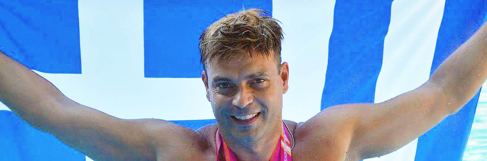

We Live 2 Inspire
Stefanos Evangelos Tzivopoulos
World Champion Diver · Coach · Inspirer
Discover My StoryAbout Stefanos
Stefanos Evangelos Tzivopoulos is a world champion diver, European and Pan-American champion, and a devoted diving and gymnastics coach. Across a career spanning decades, he has earned 25 national titles and stood on the highest podiums of the sport — from the Mediterranean Games to World Masters Championships.
Born and raised in Greece and now coaching in the United States, Stefanos lives by a single guiding mission: to transfer his passion and love for sport — and to make people feel healthy, confident, and mentally strong. That mission is the heart of We Live 2 Inspire.
Career Highlights
- 🏆 14-time Golden Senior National Champion in diving (1985–2013)
- 🏆 25 national titles across senior, junior, and youth categories
- 🏆 USA National Champion in multiple events (2014)
- 🏆 European Champion — 1m springboard & 10m platform (2013)
- 🏆 4-time Pan-American Men's Champion (2013)
- 🏆 Mediterranean Games Gold Medalist, 10m platform (2002)
- 🏆 Top 12 worldwide, 10m synchro (2001 World Championships, Japan)
- 🏆 Named Elite Athlete by Greece's Ministry of National Defense
Coaching & Mission
As a certified USA Diving and AAU coach, Stefanos has guided athletes of every level — from age-group beginners at Greek academies to American Olympic diver Kyle Prandi. He has led gymnastics and trampoline programs at Chelsea Piers and Masters diving at Team New York Aquatics.
Through his I Love Aquatics platform, he shares technique, conditioning, and the mindset that turns effort into excellence. Whether on the springboard or in life, his message stays the same: keep reaching higher, stay strong, and live to inspire.
Connect
Let's stay healthy, strong, and inspired together.